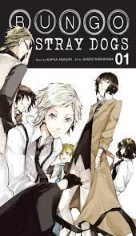

Sinopsis
Atsushi Nakajima fue expulsado de su orfanato y ahora no tiene adónde ir ni comida. Mientras está de pie junto a un río, al borde de la inanición, rescata a un hombre que intenta suicidarse caprichosamente. Ese hombre es Osamu Dazai, junto a el Doppo Kunikida ambos son miembros de una agencia de detectives muy especial. Tienen poderes sobrenaturales y se ocupan de casos demasiado peligrosos para la policía. Están rastreando un tigre que ha aparecido en el área recientemente, cuando Atsushi llegó al área. El tigre parece tener una conexión con Atsushi, y para cuando se resuelva el caso, ¡está claro que el futuro de Atsushi involucrará mucho más a Dazai y al resto de los detectives!
Información del manga:
Creado por: Kafka Asagiri
Ilustrado por: Sango Harukawa
Editorial: Kadokawa Shōten
Publicado en: Young Ace
Demográfia: Seinen
Primera publicación: 2012 - Actualidad Volúmenes: 23
Información del anime:
Director: Takuya Igarashi
Estudio: Bones Primera
Emisión: 7 de Abril de 2016
Episodios: 37 + 1 Ova
Estudio de animación
El estudio de animación que se encargó de producir Bungou Stray Dogs, fue el ya muy conocido estudio Bones. Este estudio ha animado proyectos y/o mangas de mucho renombre como lo son Boku no Hero Academia, Eureka Seven, Full Metal Alchemist, Soul Eater, Mob Psycho 100, Noragami, etc. El estudio Bones fue fundado en el año 1998 por Masahiko Minami (quien es su actual presidente), Hiroshi Ousaka y Toshihiro Kawamoto. Su sede principal se encuentra en Suginami, Tokyo, Japón. En lo que respecta a Bungou Stray Dogs, este estudio ha producido hasta ahora un total de 3 temporadas del anime, las cuales han relatado los sucesos ocurridos en el manga. Sin embargo, este último aún se encuentra en estado de publicación, por lo cual se tendrá que esperar para poder ver una 4ta temporada debido que la 3era terminó muy a la par con el manga.